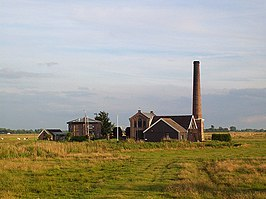
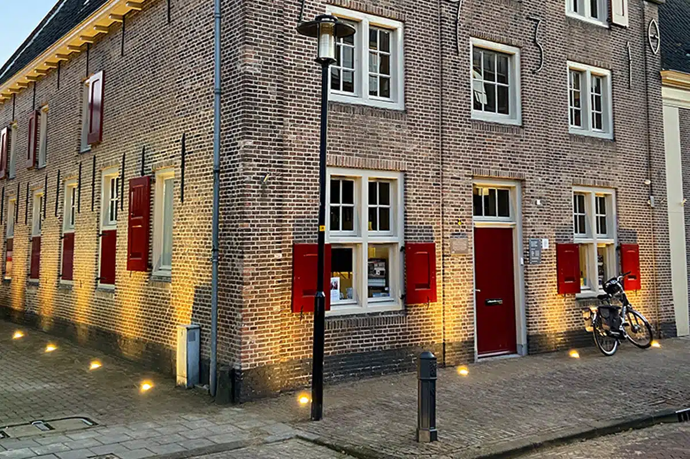

De polder kon tot 1863 op een natuurlijke wijze afwateren op de toenmalige Zuiderzee. In 1863 werd voor de afwatering een
windmolen "Hertog Reijnout" gebouwd. Het stoomgemaal is in 1883 gebouwd om een gebied van ca. 3.000 ha te bemalen. De
stoommachine is in 1882 gebouwd door Backer & Rueb. De windmolen verloor zijn functie en werd omgebouwd tot woning voor de
machinist van het stoomgemaal. In 1908 kwam er een nieuwe ketel, gebouwd door Stork. Het stoomgemaal heeft dienst gedaan tot
1983, toen een elektrisch gemaal de functie overnam. Stoomgemaal Arkemheen is een schepradgemaal.
Sinds 1985 is het regelmatig open voor het publiek. Circa 12 dagen per jaar wordt het gemaal onder stoom gebracht. In 1996,
1998, 2010 en 2012 heeft het gemaal nog meegedraaid, omdat het elektrische gemaal het niet alleen aankon. In 2007 is het gemaal
voorzien van een nieuwe stoomketel. Het gemaal is erkend als rijksmonument mede omdat het, volgens de Rijksdienst voor het
Cultureel Erfgoed een "gaaf, compleet en zeer fraai onderdeel van het ensemble uit de bloeiperiode van het schepradgemaal" is.

Museum Nijkerk is een museum dat de geschiedenis van de stad Nijkerk tentoonstelt. Het museum is gevestigd in het
laatmiddeleeuwse gasthuis, een rijksmonument in het centrum van Nijkerk. Stichting Oud Nijkerk
exploiteert het museum en stelt zich ten doel de cultuurhistorische geschiedenis levendig en toegankelijk te houden voor een
breed publiek. Naast het verzamelen van voorwerpen en gegevens wordt ook historisch onderzoek gedaan. Hoofdonderwerpen van de
collectie zijn ambachten, architectuur en streekhistorie.